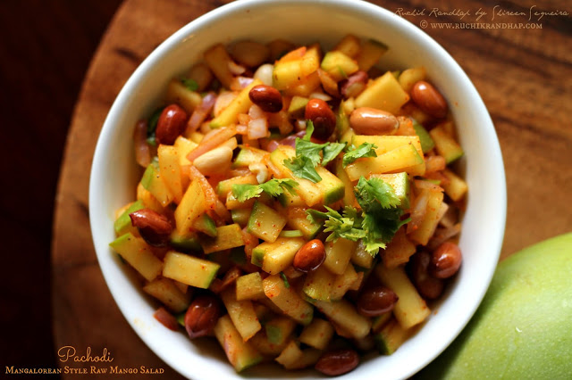

Pachodi

Evening snack with coffee. Cherishing specially during rainy seasons.
Ingradients
- Raw mango
- Red chilli powder
- Sambar powder
- Finely chopped onion
- Coconut oil
Steps
- Wash the raw mango and pat it dry. Chop it up into small pieces (with the skin on). Transfer into a bowl.
- Add the rest of the ingredients, start off with less of the spice powders (chilli and sambar) and increase it according to taste.
- Enjoy!